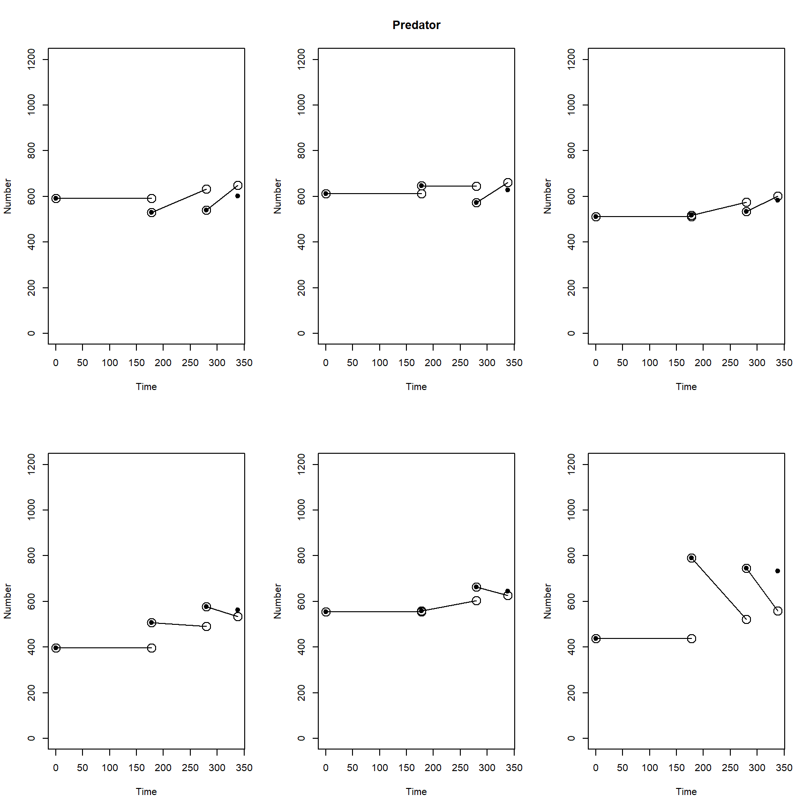
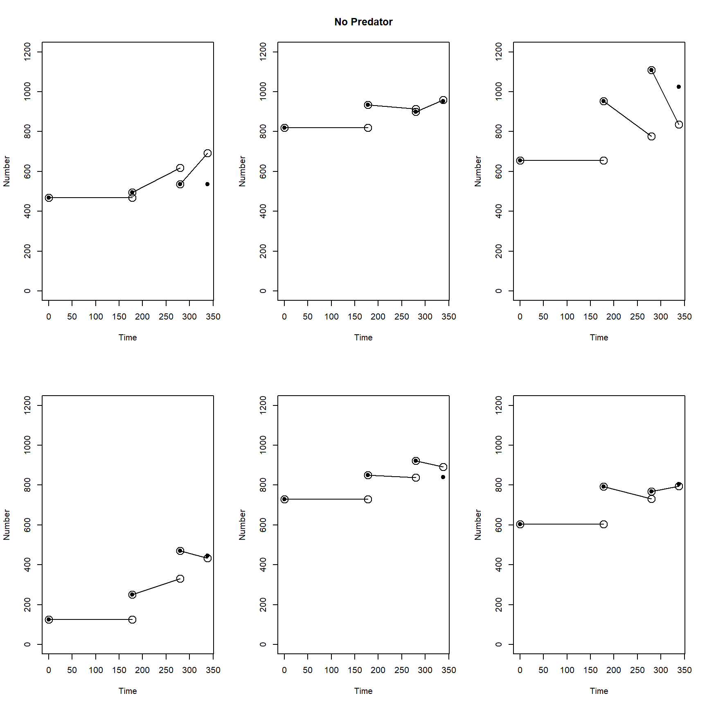

Last updated: 2021-03-02
Checks: 7 0
Knit directory: Theoretical_ecology_HW/
This reproducible R Markdown analysis was created with workflowr (version 1.6.2). The Checks tab describes the reproducibility checks that were applied when the results were created. The Past versions tab lists the development history.
Great! Since the R Markdown file has been committed to the Git repository, you know the exact version of the code that produced these results.
Great job! The global environment was empty. Objects defined in the global environment can affect the analysis in your R Markdown file in unknown ways. For reproduciblity it’s best to always run the code in an empty environment.
The command set.seed(20210122) was run prior to running the code in the R Markdown file. Setting a seed ensures that any results that rely on randomness, e.g. subsampling or permutations, are reproducible.
Great job! Recording the operating system, R version, and package versions is critical for reproducibility.
Nice! There were no cached chunks for this analysis, so you can be confident that you successfully produced the results during this run.
Great job! Using relative paths to the files within your workflowr project makes it easier to run your code on other machines.
Great! You are using Git for version control. Tracking code development and connecting the code version to the results is critical for reproducibility.
The results in this page were generated with repository version 380bbdf. See the Past versions tab to see a history of the changes made to the R Markdown and HTML files.
Note that you need to be careful to ensure that all relevant files for the analysis have been committed to Git prior to generating the results (you can use wflow_publish or wflow_git_commit). workflowr only checks the R Markdown file, but you know if there are other scripts or data files that it depends on. Below is the status of the Git repository when the results were generated:
Ignored files:
Ignored: .Rhistory
Ignored: .Rproj.user/
Untracked files:
Untracked: data/GregsVer4.csv
Note that any generated files, e.g. HTML, png, CSS, etc., are not included in this status report because it is ok for generated content to have uncommitted changes.
These are the previous versions of the repository in which changes were made to the R Markdown (analysis/Homework7.Rmd) and HTML (docs/Homework7.html) files. If you’ve configured a remote Git repository (see ?wflow_git_remote), click on the hyperlinks in the table below to view the files as they were in that past version.
| File | Version | Author | Date | Message |
|---|---|---|---|---|
| Rmd | 380bbdf | KiseokUChicago | 2021-03-02 | update |
| html | 5d5a3a3 | KiseokUChicago | 2021-03-02 | Build site. |
| Rmd | 4fe27a8 | KiseokUChicago | 2021-03-02 | HW7 |
Professor: Sarah Cobey, Greg Dwyer
Student: Kiseok Lee
This week’s assignment is to carry out an AIC calculation, and to produce figures that look like figs. 5 and 6. The data are from the dissertation of Mark Novak, a student of Tim Wootton. Mark collected time series of mussel densities in the rocky intertidal in New Zealand. He was interested in determining which of several models best explained his data. The mussels are attacked by a predatory snail, and part of Mark’s work involved comparing plots in which snails were removed to plots in which snails were not removed. His larger goal was to consider different models of predation, but considering more complicated models is beyond what we can manage here.
#reading in the Data
Data = read.csv("data/GregsVer4.csv");
########################PLOTTER()###########################################
#Plotter() is a function that plots the model predictions against the data.
#It is a bit complicated, so I wrote it for you.
#We need it because whenever you use a nonlinear fitting routine,
#you should always visually compare the model to the data, if you can.
############################################################################
Plotter<-function(params){
MaxPlots = length(unique(Data$Plot));
x = numeric(); y = numeric();
m = params[1]; I = params[2]; alpha = params[3];
for(plt in 1:MaxPlots){
Data2 = Data[Data$Plot==plt,];
PredNoPred = "";
if(Data2$Tmt[1]=="Pred"){
mhat = m + alpha;
if(plt==2){
PredNoPred = "Predator";
}
}else{
mhat = m;
if(plt==8){
PredNoPred = "No Predator";
}
}
plot(Data2$Time,Data2$N,ylim=c(0,1200),xlab="Time",ylab="Number",main=PredNoPred,pch=19);
Theory = Model(N=Data2,pars=c(mhat,I));
#lines(Data3$Time,Theory);
Times = unique(Data2$Time);
tnum = length(Times) - 1; #subtract 1 becuz no theory prediction at last time point
for(t in 1:tnum){
y[1] = Data2$N[t];
y[2] = Theory[t];
x[1] = Times[t];
x[2] = Times[t+1];
lines(x,y);
points(x,y,cex=2.0);
}
}
return(1);
}
#####################End of Plotter()##########################################
########## Part 1. Fix up the model function.
Model<-function(N,pars){
m = pars[1]; I = pars[2];
Model = numeric();
Model[1]=N$N[1]
maxt = length(N$Time) - 1;
for(t in 1:maxt){
TimeDiff = N$Time[t+1]-N$Time[t]; #1.1 This is the difference between one sampling time and the next
Model[t+1] = N$N[t]*exp(m*(-TimeDiff))+(I/m)*(1-exp(m*(-TimeDiff)))
} #1.2 The model goes here
return(Model);
}
# understanding dataframe and model function
Data$Time [1] 0 0 0 0 0 0 0 0 0 0 0 0 178 178 178 178 178 178 178
[20] 178 178 178 178 178 280 280 280 280 280 280 280 280 280 280 280 280 338 338
[39] 338 338 338 338 338 338 338 338 338 338Data$Plot [1] 1 2 3 4 5 6 7 8 9 10 11 12 1 2 3 4 5 6 7 8 9 10 11 12 1
[26] 2 3 4 5 6 7 8 9 10 11 12 1 2 3 4 5 6 7 8 9 10 11 12Data$Tmt [1] "Pred" "Pred" "Pred" "Pred" "Pred" "Pred" "NoPred" "NoPred"
[9] "NoPred" "NoPred" "NoPred" "NoPred" "Pred" "Pred" "Pred" "Pred"
[17] "Pred" "Pred" "NoPred" "NoPred" "NoPred" "NoPred" "NoPred" "NoPred"
[25] "Pred" "Pred" "Pred" "Pred" "Pred" "Pred" "NoPred" "NoPred"
[33] "NoPred" "NoPred" "NoPred" "NoPred" "Pred" "Pred" "Pred" "Pred"
[41] "Pred" "Pred" "NoPred" "NoPred" "NoPred" "NoPred" "NoPred" "NoPred"Data2 = Data[Data$Plot==2,]
N = Data2
pars=c(1e-4,1.3)
Model(N=Data2,pars)[1] 612.0000 830.5555 772.3602 644.8680# understanding model function step by step
# m = pars[1]; I = pars[2];
# Model = numeric();
# Model[1]=N$N[1]
# maxt = length(N$Time) - 1;
# for(t in 1:maxt){
# TimeDiff = N$Time[t+1]-N$Time[t]; #1.1 This is the difference between one sampling time and the next
# Model[t+1] = N$N[t]*exp(m*(-TimeDiff))+(I/m)*(1-exp(m*(-TimeDiff)))
# } #1.2 The model goes here
# Model
########## Task 2. Fix up the code for the likelihood function without predation.
LHoodNoPred<-function(pars){
MaxPlots = length(unique(Data$Plot));
SSE = 0.0;
for(plt in 1:MaxPlots){
Data2 = Data[Data$Plot==plt,];
Theory = Model(N=Data2,pars=pars);
Data3 = Data2[2:nrow(Data2),];
SSE = sum((Theory[2:4]-Data3$N)^2); #2.1 Here you update the sum of squared errors between the data and the model
}
return(SSE);
}
############## Task 3. Fix up the code for the likelihood function with predation
LHoodPred<-function(params){
MaxPlots = length(unique(Data$Plot));
SSE = 0.0;
m = params[1]; I = params[2]; alpha = params[3];
for(plt in 1:MaxPlots){
Data2 = Data[Data$Plot==plt,];
if(Data2$Tmt[1]=="Pred"){
mhat = m+alpha; #3.1 This is the death rate in the predation plots, which includes alpha
}else{
mhat = m; #3.2 This is the death rate in the predator-exclusion plots, which does not include alpha
}
pars = c(mhat,I); #Model parameters, to pass to the Model() function
Theory = Model(N=Data2,pars=pars); #3.3 Calculate the model prediction here
Data3 = Data2[2:nrow(Data2),];
SSE = sum((Theory[2:4]-Data3$N)^2); #3.4 Update the sum of squared errors
}
return(SSE);
}
################# Task 4. Write an AIC function
AICCalc<-function(n,K,LHood){
return(n*log(LHood/n)+2*K*(n/(n-K-1))); #4.1 Type in the AIC equation here
}
################# Task 5. Using optim() and finishing the calculation
#Now we calculate the AICc, which is n*log(SSE/n) = 2*K*n/(n-K-1)
#First we calculate n, then we calculate the likelihoods, and we use the 2 to calc. the AICc
#The initial population sizes don't count as samples, so n is the number of samples minus the inits
InitPops = length(Data$Time[Data$Time==0]);
n = nrow(Data) - InitPops;
#Calculate the sum of squares for the no-predation model
Output = optim(par=c(1e-4,1.3),fn=LHoodNoPred);
#Calculate the AIC for the no-predation model
K1 = length(Output$par);
AIC1 = AICCalc(n=n,K=K1,LHood=Output$value) #AICCalc() is the function that calculates the AIC
#Calculate the sum of squares for the predation model
Output2 = optim(par=c(1e-4,1.3,1e-4),fn=LHoodPred); #5.1 Use the calculation for the no-predation model as a template here
#Calculate the AIC for the predation model
K2 = length(Output2$par);
AIC2 = AICCalc(n=n,K=K2,LHood=Output2$value); #5.2 Again use the calculation for the no-predation model as a template here
#Print out the AIC scores for each model, along with the AIC difference
cat("AIC1:",AIC1," AIC2:",AIC2," Delta AIC:",AIC1-AIC2,"\n");AIC1: 109.3313 AIC2: 111.7176 Delta AIC: -2.38635 #plot the data and the model prediction
par(mfrow=c(2,3));
par(ask=1);
Plotter(params=Output2$par);
[1] 1
sessionInfo()R version 4.0.3 (2020-10-10)
Platform: x86_64-w64-mingw32/x64 (64-bit)
Running under: Windows 10 x64 (build 19042)
Matrix products: default
locale:
[1] LC_COLLATE=English_United States.1252
[2] LC_CTYPE=English_United States.1252
[3] LC_MONETARY=English_United States.1252
[4] LC_NUMERIC=C
[5] LC_TIME=English_United States.1252
attached base packages:
[1] stats graphics grDevices utils datasets methods base
other attached packages:
[1] workflowr_1.6.2
loaded via a namespace (and not attached):
[1] Rcpp_1.0.5 whisker_0.4 knitr_1.31 magrittr_2.0.1
[5] R6_2.5.0 rlang_0.4.10 highr_0.8 stringr_1.4.0
[9] tools_4.0.3 xfun_0.20 git2r_0.27.1 htmltools_0.5.0
[13] ellipsis_0.3.1 yaml_2.2.1 digest_0.6.27 rprojroot_2.0.2
[17] tibble_3.0.4 lifecycle_1.0.0 crayon_1.4.1 later_1.1.0.1
[21] vctrs_0.3.6 promises_1.1.1 fs_1.5.0 glue_1.4.2
[25] evaluate_0.14 rmarkdown_2.6 stringi_1.5.3 compiler_4.0.3
[29] pillar_1.4.7 httpuv_1.5.4 pkgconfig_2.0.3